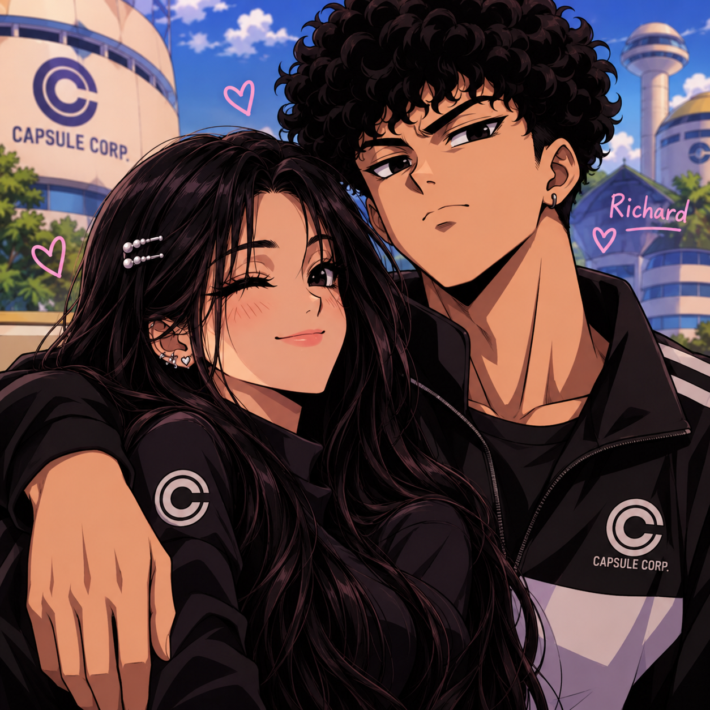

DRAGON BALL
Até Você Voltar ❤️

Uma história de amizade, amor, saudade e grandes aventuras.
No universo dos Guerreiros Z, Luana vive dias especiais ao lado dos personagens de Dragon Ball. Mas uma ausência inesperada vai mudar a rotina do grupo...
Vinte capítulos. Muitas conversas. Uma história que ninguém vai esquecer.
ATÉ A PRÓXIMA! 🐉
Uma história que continua... ❤️
Entre batalhas, conversas, risadas e momentos difíceis, os Guerreiros Z descobriram que a verdadeira força também está em cuidar de quem amamos.
E para Luana e Richard, essa foi apenas mais uma página de uma história que ainda tem muito para acontecer.